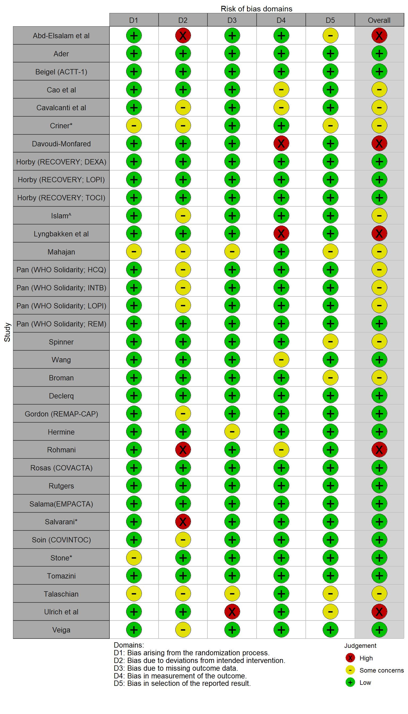

library(readxl)
library(robvis)2 Validity control and quality assessment of real-world data and real-world evidence
Thomas Debray ![]()
The quality of real-world data is often suboptimal and can therefore lead to bias when generating real-world evidence (RWE). In this chapter, we will introduce key quality concerns of RWD, including their accuracy, completeness, and timeliness. Subsequently, we will discuss which steps can be taken to assess the quality of RWD, and determine their fitness for use. The chapter will also introduce directed acyclic graphs to explain how the analysis of RWD may be affected by different types of bias. We will put particular focus on confounding bias, selection bias, and information bias, and explain how these biases can be addressed by referring to specific chapters from the book. Finally, the chapter presents common quality appraisal tools that can be used to assess the quality of real-world evidence (for instance when conducting a systematic review).
2.1 Example code
A risk of bias assessment was conducted in the COVID-NMA review. We can create a summary table of risk of bias assessment and produce a traffic light plot as follows:
Risk_of_Bias <- read_excel("resources/RoB-covid.xlsx")
#creation of traffic light plot
trafficlight_rob <- rob_traffic_light(data = Risk_of_Bias, tool = "ROB2")
trafficlight_rob
Version info
This chapter was rendered using the following version of R and its packages:
R version 4.2.3 (2023-03-15 ucrt)
Platform: x86_64-w64-mingw32/x64 (64-bit)
Running under: Windows 10 x64 (build 19045)
Matrix products: default
locale:
[1] LC_COLLATE=Dutch_Netherlands.utf8 LC_CTYPE=Dutch_Netherlands.utf8
[3] LC_MONETARY=Dutch_Netherlands.utf8 LC_NUMERIC=C
[5] LC_TIME=Dutch_Netherlands.utf8
attached base packages:
[1] stats graphics grDevices utils datasets methods base
other attached packages:
[1] robvis_0.3.0.900 readxl_1.4.2
loaded via a namespace (and not attached):
[1] cellranger_1.1.0 pillar_1.9.0 compiler_4.2.3 tools_4.2.3
[5] digest_0.6.31 jsonlite_1.8.5 evaluate_0.21 lifecycle_1.0.3
[9] tibble_3.2.1 gtable_0.3.3 pkgconfig_2.0.3 rlang_1.1.1
[13] cli_3.6.1 rstudioapi_0.14 yaml_2.3.7 xfun_0.39
[17] fastmap_1.1.1 withr_2.5.0 stringr_1.5.0 dplyr_1.1.2
[21] knitr_1.43 generics_0.1.3 vctrs_0.6.3 htmlwidgets_1.6.2
[25] grid_4.2.3 tidyselect_1.2.0 glue_1.6.2 R6_2.5.1
[29] fansi_1.0.4 rmarkdown_2.22 farver_2.1.1 tidyr_1.3.0
[33] purrr_1.0.1 ggplot2_3.4.2 magrittr_2.0.3 scales_1.2.1
[37] codetools_0.2-19 htmltools_0.5.5 colorspace_2.1-0 utf8_1.2.3
[41] stringi_1.7.12 munsell_0.5.0